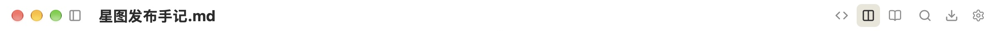
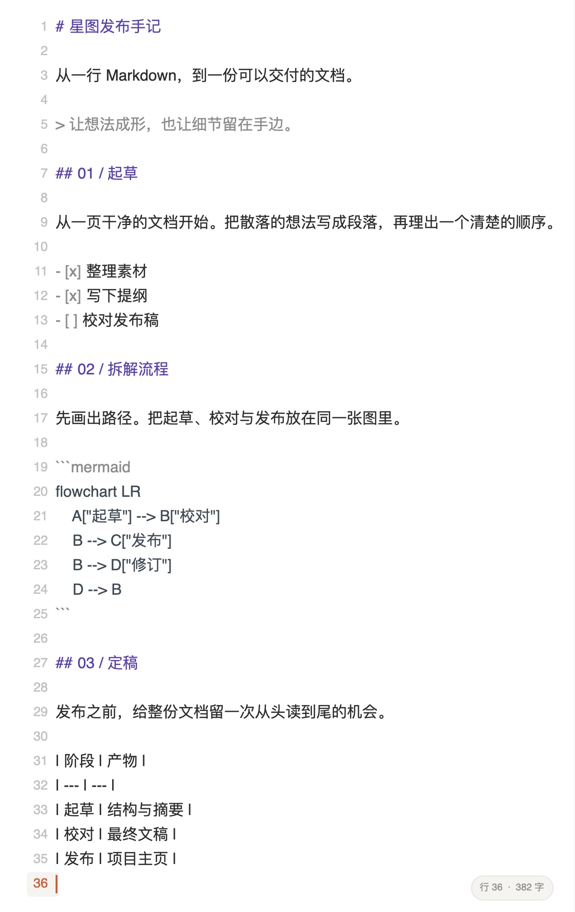
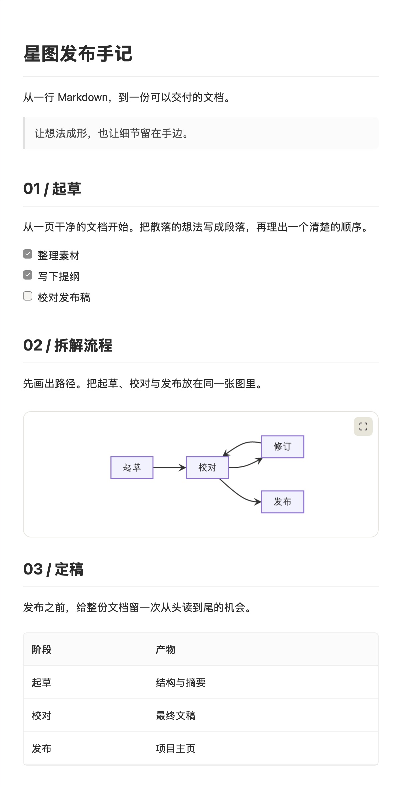
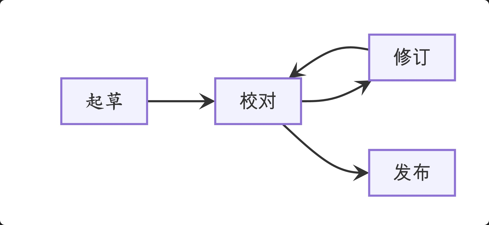
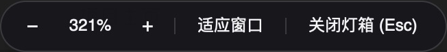

ZMark
写下去，读得顺。
原生本地 Markdown 编辑器
分屏 · 同步滚动
边写，
边看。
左边写源码，右边看排版。
滚动一侧，两边跟着走。



Mermaid · 高清灯箱
一张图，看清流程。
本机渲染，点开就能放大。


ZMark
让 Markdown 写起来更顺手。
原生本地 Markdown 编辑器
左边写源码，右边看排版。
滚动一侧，两边跟着走。



本机渲染，点开就能放大。


让 Markdown 写起来更顺手。